무선설비기능사 (2005-04-03 기출문제)
1과목: 임의 구분
1. e=141 sin(120πt-π/6)인 파형의 주파수는 몇[㎐]인가?
- 120[㎐]
- 60[㎐]
- 50[㎐]
- 12.5[㎐]
(정답률: 알수없음)

2. 그림에서 저항 R2에 흐르는 전류는?
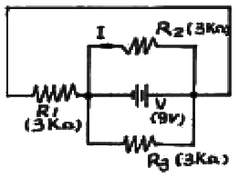
- 1㎃
- 2㎃
- 3㎃
- 4㎃
(정답률: 알수없음)
3. 무한정인 도선에 10[A]의 전류가 흘렀다. 이 도선에서 50[㎝] 떨어진 점의 자장의 세기 H[AT/m]는 얼마인가?
- 약 1.25[AT/m]
- 약 3.18[AT/m]
- 약 6.36[AT/m]
- 약 12.72[AT/m]
(정답률: 알수없음)
4. 반송파의 진폭을 신호파에 따라 변화시키는 것은?
- 펄스 변조
- 위상 변조
- 주파수 변조
- 진폭 변조
(정답률: 알수없음)
5. 아래 회로의 명칭은 무엇인가?
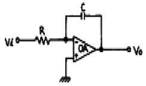
- 미분회로
- 적분회로
- 가산기회로
- 차동증폭기회로
(정답률: 알수없음)
6. 다음과 같은 연산증폭회로의 입 · 출력식은?
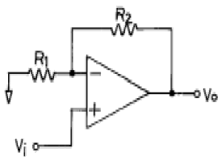
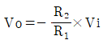
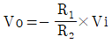
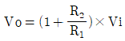
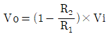
(정답률: 알수없음)
7. 3[Ω]의 저항과 4[Ω]의 유도리액턴스를 직렬로 연결한 회로의 합성 임피던스의 크기는 몇 [Ω]인가?
- 3
- 4
- 5
- 6
(정답률: 알수없음)
8. FET에서 드레인 전류를 제어하는 것은?
- 게이트 전압
- 게이트 전류
- 소스 전압
- 소스 전류
(정답률: 알수없음)
9. 수정 발진기의 특징을 옳게 나타낸 것은?
- 수정부분의 발진조건을 만족하는 유도성 주파수 범위가 좁다.
- 수정편의 Q는 대단히 낮기 때문에 진동주파수가 일정하다.
- 수정편은 기계적으로 불안정한 점을 이용한 것이다.
- 수정진동자는 온도의 변화에 전혀 영향을 받지 않는다.
(정답률: 알수없음)
10. [AT/Wb]의 단위와 같은 것은?
- [H]
- [H-1]
- [F]
- [F-1]
(정답률: 알수없음)
11. 다음 회로에서 단자 AB사이의 합성저항값은 얼마인가? (단, R1=2[Ω], R2=3[Ω], R3=2[Ω])
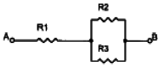
- 2.4 [Ω]
- 3.2 [Ω]
- 7 [Ω]
- 8 [Ω]
(정답률: 알수없음)
12. 다음중 CE증폭기와 CC증폭기의 입출력 전압의 위상관계가 옳은 것은?
- CE증폭기 - 역위상 , CC증폭기 - 동위상
- CE증폭기 - 동위상 , CC증폭기 - 동위상
- CE증폭기 - 동위상 , CC증폭기 - 역위상
- CE증폭기 - 역위상 , CC증폭기 - 역위상
(정답률: 알수없음)
13. 진폭 변조에서 반송파 전력을 Pc, 변조도를 m이라 할 때 피변조파 전력 Pm을 나타내는 식은?
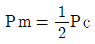
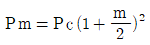
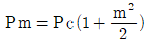
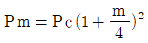
(정답률: 알수없음)
14. 플라스틱 필름을 유전체로 한 콘덴서로서 용량의 정밀도가 높고 물의 흡수성이 극히 낮아 주파수 특성이 매우 우수한 것은?
- 마일러콘덴서
- 마이카콘덴서
- 세라믹콘덴서
- 전해콘덴서
(정답률: 알수없음)
15. UJT의 단자 구성으로 맞는 것은?
- 베이스1, 베이스2, 에미터
- 에미터1, 에미터2, 베이스
- 에미터, 베이스, 컬렉터
- 컬렉터, 베이스1, 베이스2
(정답률: 알수없음)
16. FLOW CHART를 작성하는 이유로 적당치 않은 것은?
- 처리절차를 일목요연하게 한다.
- 프로그램의 인계인수가 용이하다.
- ERROR 수정이 용이하다.
- 대용량 MEMORY를 사용 할 수 있다.
(정답률: 알수없음)
17. 다음 중 주기억장치로 사용되는 것은?
- 자기 테이프(magnetic tape)
- 자기 디스크(magnetic disk)
- 자기 코아(magnetic core)
- 자기 드럼(magnetic drum)
(정답률: 알수없음)
18. 어셈블리어(Assembly language)를 사용하는 것이 가장 적합한 것은?
- 인사 관리 프로그램
- 수치 계산 프로그램
- 입출력장치 제어 프로그램
- 통계처리 프로그램
(정답률: 알수없음)
19. 전자계산기를 세대별로 분류할때 진공관을 사용하던 세대는 몇 세대라 하는가?
- 제 1세대
- 제 2세대
- 제 3세대
- 제 4세대
(정답률: 알수없음)
20. 다음 중 배타적 OR (Exclusive - OR) Gate의 표현식이 틀린 것은?
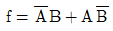
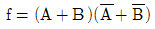
- f = A ⒳ B
- f = A ⑽ B
(정답률: 알수없음)
2과목: 임의 구분
21. 출력장치에 해당되지 않는 것은?
- 카드리더
- 모니터
- 라인 프린터
- X×Y 플로터
(정답률: 알수없음)
22. 컴퓨터의 연산장치에서 수행하는 것은?
- 사칙연산, 시프트, 논리연산
- 시프트, 산술연산, 인터럽트
- 논리연산, 산술연산, 버스제어
- 버스제어, 인터럽트, 산술연산
(정답률: 알수없음)
23. Encoder에 대한 설명으로 가장 적합한 것은?
- 입력 신호를 2진수로 부호화하는 회로이다.
- 출력 단자에 신호를 보내는 회로이다.
- 2진 부호를 10진 부호로 변환하는 회로이다.
- 입력 신호를 해독하는 해독기이다.
(정답률: 알수없음)
24. 2진수 1000110111을 8진수로 고치면?
- 4334
- 1063
- 1067
- 4331
(정답률: 알수없음)
25. 컴퓨터를 더욱 효율적으로 사용하기 위하여 작성된 동작프로그램의 집합과 관계 깊은 것은?
- 시스템 소프트웨어(system software)
- 스프레드 시트(spread sheet)
- 프로그램 언어(program language)
- 전자 우편(electronic mail)
(정답률: 알수없음)
26. 송신기에서 안테나까지 사용되는 전송 선로를 무엇이라 하는가?
- 점퍼선
- 급전선
- 리드선
- 전력선
(정답률: 알수없음)
27. 무선수신기에 있어서 전원전압의 변동에 영향이 가장 적은 것은?
- 이득
- 선택도
- 감도
- 안정도
(정답률: 알수없음)
28. 수평면내 지향성이 없는 안테나는?
- 롬빅 안테나
- 제펠린 안테나
- 루프 안테나
- 브라운 안테나
(정답률: 알수없음)
29. PM파를 FM파로 전환시키기 위해서 사용되는 회로는?
- 평활회로
- 공진회로
- 미분회로
- 적분회로
(정답률: 알수없음)
30. 지구에서 바라볼 때 위치가 계속 변화하는 위성을 무엇이라 하는가?
- 동기위성
- 비동기위성
- 정지위성
- 고도위성
(정답률: 알수없음)
31. 다음 중 직접 FM 송신기에 사용되지 않는 회로는?
- 리액턴스관
- 프리 엠퍼시스(pre - emphasis)
- IDC
- 프리 디스토터(pre - distortor)
(정답률: 알수없음)
32. B급 고주파 증폭기에서 직류입력 전력을 200[W], 컬렉터 출력 전력이 180[W]일 때 컬렉터 효율은 몇 [%]인가?
- 110
- 90
- 45
- 10
(정답률: 알수없음)
33. FM 수신기에서 스켈치(squelch)회로의 동작은?
- 자동 주파수 조정
- 자동적으로 주파수 편이를 제어
- 수신주파수의 고역부분 억제
- 수신전파가 미약하거나 없을 때 내부잡음 억제
(정답률: 알수없음)
34. 송신 공중선으로부터 2[㎞] 지점에서 측정한 전계강도가 100[㎶/m]이라 한다. 5[㎞]의 거리에서 전계강도로 환산하면 몇[㎶/m]인가?
- 10[㎶/m]
- 20[㎶/m]
- 30[㎶/m]
- 40[㎶/m]
(정답률: 알수없음)
35. 레이더의 최대탐지거리를 크게하는 방법이 아닌 것은?
- 송신출력을 크게한다.
- 수신기의 감도를 적당히 줄인다.
- 안테나의 높이를 가능한한 높인다.
- 안테나의 개구면적을 크게한다.
(정답률: 알수없음)
36. 정지 궤도 위성통신의 장점이 아닌 것은?
- 서비스지역이 넓다.
- 광대역 통신이 가능하다.
- 통신망 구축이 용이하다.
- 통신보안 장치가 필요하다.
(정답률: 알수없음)
37. 방향탐지시 선박에서 발사된 전파가 해상에서는 등속도로 전파되나 육상에 가까워 질수록 속도가 늦어 생기는 오차를 무엇이라고 하는가?
- 야간 오차
- 해안선 오차
- 수직 오차
- 절대 오차
(정답률: 알수없음)
38. 맥동률(ripple)이 2[%]인 전원설비의 직류분 전압이 100[V]이었다. 이 때 맥동분의 전압실효치는 몇 [V]인가?
- 2
- 5
- 50
- 200
(정답률: 알수없음)
39. FM수신기에서 주파수변별회로의 특성을 측정하는 요령은?
- 입력전압의 크기에 대한 출력전압의 주파수 변화를 구한다.
- 입력전압의 주파수 변화량에 대한 출력전압의 주파수 크기를 구한다.
- 입력전압의 크기에 대한 출력전압 크기를 구한다.
- 입력전압의 주파수 변화량에 대한 출력전압의 크기를 구한다.
(정답률: 알수없음)
40. 다음 중 극초단파대 이상에서 사용하는 안테나는?
- 파라볼라 안테나
- 빔 안테나
- 반파 다이폴 안테나
- 롬빅 안테나
(정답률: 알수없음)
3과목: 임의 구분
41. 안테나의 복사저항을 Rr,손실저항을 Ra라 하면 안테나 효율은?
- Ra/Rr
- Rr/Ra
- Ra/Ra + Rr
- Rr/Ra + Rr
(정답률: 알수없음)
42. FM 수신기에 AFC회로가 사용되는 이유는?
- 선택도를 높이기 위해
- 수신 전파의 감도를 조정하기 위해
- 국부 발진 주파수의 변동을 적게하기 위해
- 수신 감도를 올리기 위해
(정답률: 알수없음)
43. 다음 중 위성의 궤도에 따른 분류가 아닌 것은?
- 저궤도(LEO)
- 중궤도(MEO)
- 고궤도(GEO)
- 중고궤도(HEO)
(정답률: 알수없음)
44. 수신기의 이득 및 내부잡음과 가장 관계 깊은 것은?
- 감도
- 선택도
- 충실도
- 안정도
(정답률: 알수없음)
45. 단측대파(SSB) 통신방식의 특징이 아닌 것은?
- 신호대 잡음비(S/N)가 향상된다.
- 양측파대 방식에 비하여 전력소비가 크다.
- 다중통신에 적합하다.
- 비트방해가 일어나지 않는다.
(정답률: 알수없음)
46. 통신보안이란 무엇인가?
- 통신운용을 안전하게 하는 것이다.
- 통신의 상호 혼신을 방지하는 것이다.
- 통신사를 안전하게 보호하는 것이다.
- 통신내용을 안전하게 보호하는 것이다.
(정답률: 알수없음)
47. 보안자재의 긴급파기 순서는?
- 과거, 미래, 현재
- 미래, 과거, 현재
- 과거, 현재, 미래
- 미래, 현재, 과거
(정답률: 알수없음)
48. 통신보안 방법에 해당되지 않는 것은?
- 암호보안
- 자재보안
- 송신보안
- 수신보안
(정답률: 알수없음)
49. 전력선반송설비 및 유도식통신설비에서 발사되는 고조파, 저조파 또는 기생발사강도는 기본파에 대하여 몇 dB이하 인가?
- 20dB
- 30dB
- 40dB
- 50dB
(정답률: 알수없음)
50. 정보통신부 장관으로부터 무선국의 개설허가를 받고 무선국을 개설한 자는?
- 시설자
- 무선종사자
- 무선업무취급자
- 무선국을 운용하는 사업자
(정답률: 알수없음)
51. 다음 중 보안성이 우수한 순서대로 된 것은?
- ① 전령통신, ② 우편통신, ③ 음향통신, ④ 시호통신, ⑤ 무선통신
- ① 전령통신, ② 음향통신, ③ 우편통신, ④ 시호통신, ⑤ 무선통신
- ① 전령통신, ② 우편통신, ③ 시호통신, ④ 음향통신, ⑤ 무선통신
- ① 전령통신, ② 음향통신, ③ 우편통신, ④ 유선통신, ⑤ 무선통신
(정답률: 알수없음)
52. 전파형식별 공중선전력의 표시와 환산비에서 "d", "da"의 뜻은?
- d : 충격계수, da : 평균 충격계수
- d : 평균 충격계수, da : 충격계수
- d : 펄스폭, da : 펄스주기
- d : 펄스주기, da : 펄스폭
(정답률: 알수없음)
53. 무변조상태에서 송신장치로부터 송신공중선계의 급전선에 공급되는 전력으로서 무선주파수 1주기 동안에 걸처 평균한 것은?
- 규격전력
- 평균전력
- 첨두전력
- 반송파전력
(정답률: 알수없음)
54. 다음중 형식검정대상에 포함되지 않는 기기는?
- 네비텍스수신기
- 이동가입무선전화장치
- 디지털선택호출전용수신기
- 협대역직접인쇄전신장치의 기기
(정답률: 알수없음)
55. 교신분석을 가장 잘 설명한 것은?
- 통신내용을 분석하는 것이다.
- 통신음어를 분석하는 것이다.
- 통신운용 자료를 분석하는 것이다.
- 통신소의 특성을 분석하는 것이다.
(정답률: 알수없음)
56. 주파수허용편차의 표시방법은?
- 퍼센트(%)로 표시한다.
- 헤르츠(㎐)로 표시한다.
- 백만분율 또는 헤르츠(㎐)로 표시한다.
- 백만분율 또는 퍼센트(%)로 표시한다.
(정답률: 알수없음)
57. 무선설비의 안전시설기준에서 고압전기는?
- 교류전압 110볼트 초과, 직류전압 600볼트 초과
- 교류전압 220볼트 초과, 직류전압 750볼트 초과
- 교류전압 600볼트 초과, 직류전압 750볼트 초과
- 교류전압 750볼트 초과, 직류전압 600볼트 초과
(정답률: 알수없음)
58. 혼신방지를 위하여 고주파전류가 통하는 전력선의 분기점에 설치하는 것은?
- 변압기
- 태양전지
- 쵸크코일
- 유도식 통신설비
(정답률: 알수없음)
59. 수신 설비의 충족 조건이 아닌 것은?
- 선택도가 클 것
- 감도가 충분할 것
- 명료도가 충분할 것
- 수신 주파수의 범위가 클 것
(정답률: 알수없음)
60. 다음 중 필요주파수대폭 바깥쪽의 주파수에서 발생하는 발사를 정의하는 것은?
- 고조파발사
- 기생발사
- 스퓨리어스발사
- 대역외발사
(정답률: 알수없음)